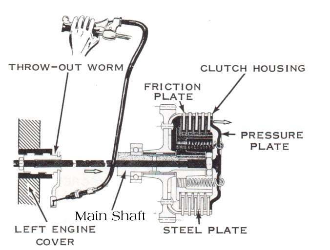

This is the small group of parts between the clutch cable and the clutch plates. A lever on the engine side pulls on the cable end, turns a cam or worm, and pushes a rod through the middle of the gearbox shaft. The rod pushes on the pressure plate and releases the clutch.
What it does
Most clutches release from the centre. On some engines the release is in the clutch cover. On many others a long rod passes through the gearbox input shaft. A ball or a bearing sits between the rod and the pressure plate, or between the two halves of a two-piece rod, so the rod does not turn against the plate.
Signs it is worn or failing
- The clutch lever feels normal but the clutch does not release: clutch drags.
- A clutch that suddenly stops working. The course says to check a bent release rod first, before taking the clutch apart. The rod passes near the front sprocket and can be bent by sticks and debris thrown off the chain.
- Rough or notchy lever feel with a dry cam, or a worm that is worn or dry.
- Heavy lever from a dry or seized lifter.
When to replace it
Replace the rod if it is bent (roll it on a flat surface) or worn. Replace the ball or bearing if it is rough or pitted. Grease the cam, worm and pivot at each service.
What to match when buying
- Engine model and year. Rod length matters.
- Whether the rod is one piece or two, and whether a ball or a bearing sits between the parts.
- Buy the cover seal or oil seal at the same time if the rod runs through one.
Fitting notes
- Do not let the ball fall out and get lost when you remove the cover or rod.
- Many bikes have an adjusting screw and lock nut on the release lever. It can be a left-hand or right-hand thread, so check the manual first.
- Set the lever adjustment first, then the cable free play. See Adjust clutch lever free play. Keep some free play so the springs can press the plates fully.
- If the plates are stuck after a long rest, try Free stuck clutch plates before blaming the rod.